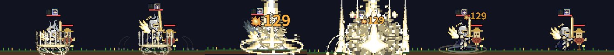
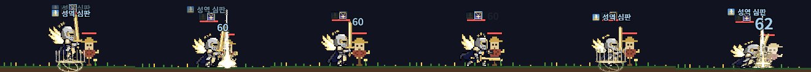

시즌7 스킬 트리 · 14줄기 새 스킬 연출
검신 말고 14줄기의 새 스킬 7개씩(98종)을 지금 VFX 시트 재조합으로 만들었다 (유료 생성 0회). 큰 띠 = ★★★(5칸), 작은 띠 = 1칸, 0.44초 간격 6장. ▶ 는 스킬 시뮬레이터로 반복 재생 (처음 30초쯤 불러옴). 검수: 도트 비평(sonnet) 2회 — 배지는 마지막 판정.
파천검왕 tyrant
성좌기사 archon
성역 심판 융합 a+b · 바탕 심판의 일격 손볼 곳 3.2 ▶ ★★★ ▶ 1칸


★★★ 8~9프레임 블록 모자이크 번짐 제거(도트 크기 통일, 마지막 프레임 침식)
천마장군 skyGeneral
용황 dragonlord
전쟁군주 warlord
공성포수 siegeMaster
신궁 deadeye
차원궁사 voidArcher
뇌제 thunderEmperor
대마도사 archmage
빙결의 군주 frostlord
챔피언 champion
템페스트 tempest
그랜드마스터 grandmaster
새 스킬 아이콘 105개 (검성 7 + 14줄기 98, 12×12 도트 → src/skin/icons.png)
상시 장식: 대마도사 머리 뒤 불꽃 고리 · 뇌제 등 뒤 번개 바퀴
시트에서 뺀 소품을 몸 뒤 VFX 로 (src/sprites.js SHEET_BACK_AURA — P7·P12·P11·H29 재배치, 유료 0). 게임·캠프·결투 재생 어디서나 몸보다 먼저 그린다.
결투 (15줄기 리그)
줄기별 결투 배율(src/tree7.js T7_DUEL_TUNE)을 "15줄기 × 빌드 a·b·k 리그 승률 50%" + "줄기 안 맞대결 50%" 기준으로 다시 맞춤. 리그 38~59% · 근접 vs 원거리 48% · 줄기 안 맞대결 14~50/60판 (Lv130·170). 서버 배포 불필요 (결투 배율은 클라이언트 프로필 값).